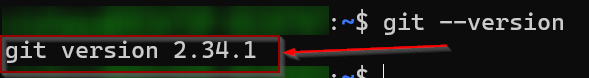

Lab: Installing Git on Windows 10
Objectives:
- Understand the purpose and benefits of Git.
- Learn how to download and install Git on Windows 10.
- Configure Git with basic settings.
- Verify successful installation and configuration.
Tasks:
Task 1: Introduction to Git
- Discuss the concept of version control.
- Explain the benefits of using Git.
- Introduce the Git workflow and basic commands.
Task 2: Downloading Git
- Visit the official Git website.
- Download the appropriate Git installer for Windows 10.
Task 3: Installation Process
- Double-click the downloaded installer file.
- Follow the on-screen instructions:
- Accept the license agreement.
- Choose the default installation options (unless you have specific requirements).
- Select your preferred Git Bash shell (e.g., Git Bash, Command Prompt).
- Customize additional settings (optional).
- Click "Install".
Task 4: Configuration
- Open Git Bash.
- Set your Git username
git config --global user.name "Your Name"
git config --global user.email "your_email@example.com"
Task 5: Verification
Check the Git version
git --version
If you see the Git version number, the installation was successful.
